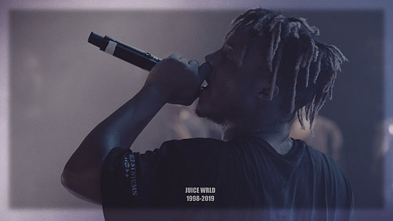

Til baka
Up-and-coming rapper Juice WRLD burst onto the music scene in 2017 with the hit song "Lucid Dreams." His following, much of which was introduced to his work through the streaming site SoundCloud, was treated to another breakout song in "All Girls are The Same" later that year as part of a three-song EP titled "Nothings Different." Pitchfork praised that song as a "Best New Track." "All Girls are the Same" and "Lucid Dreams" were the Chicago rappers' first time on the Billboard Hot 100 charts, debuting at 92 and 74, respectively.
Juice WRLD -- born Jarad Higgins -- released his first studio album in May of 2018, titled "Goodbye & Good Riddance." The 16 tracks offered an additional view into the creative "emo-rap" genre Juice WRLD has helped build momentum around. The album gained commercial and streaming success as "Lucid Dreams" climbed to a top-5 spot on the Billboard charts.
Since bursting onto the scene, Juice WRLD has collaborated with some of the biggest stars in music, including Lil Uzi Vert, Travis Scott, and Future. The track "Wasted" from Juice WRLD's first album, featuring Lil Uzi Vert, was another hit on the Billboard charts.
Frequently Asked Questions About Juice WRLD Ticket Prices and Concert Information
Is Juice WRLD touring?
See above for all scheduled Juice WRLD concert dates and click "favorite" at the top of the page to get Juice WRLD tour updates and discover similar events.
How much are Juice WRLD tickets?
Juice WRLD tickets on the secondary market can vary depending on a number of factors. Typically, Juice WRLD tickets can be found for as low as $61.00, with an average price of $85.00.
Who's opening for Juice WRLD?
There are no openers for Juice WRLD at this time.
How long are Juice WRLD concerts?
Most concerts last about 2-3 hours but can run shorter or longer depending on the artist, opening acts, encore, etc. Juice WRLD concerts typically last 1 hour.
What's Juice WRLD's setlist?
While setlists can vary between venues, Juice WRLD will likely play the following songs on tour,
Armed & Dangerous
All Girls Are the Same
Hear Me Calling
Black & White
Empty
Legends
Fine China (Future cover)
Lean Wit Me
No Bystanders (Travis Scott cover)
Robbery
Lucid Dreams